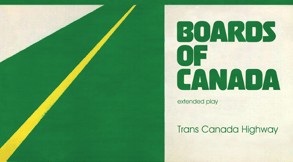

|  |
|
Cover artwork for Trans Canada Highway |
Boards of Canada is one of my favourite groups, and Trans Canada Highway is just one of the fruits of their musical labour. Although shorter then a full length album, it is a good starter to the group as it captures the dark but nostalgic atmosphere that they are known for.
The intro track, Dayvan Cowboy has acheived the most commercial success, landing a few spots in advertisements. It is a slowly building track, climaxing around five mins into the track in a wave of guitar and drums. Skyliner and Left Side Drive are a bit slower, with synths droning on and drums building up their beats. The remaining tracks, Under the Coke Sign and Hear from Telegraph Lines are a love-hate thing for most listeners. Short in duration and percussion-less, these works are minimal but still intriguing.
Although Trans Canada Highway is not for dancing or rocking out, it is a great record to throw on in the background when playing cards, studying, meditating or going to sleep.
My Score: 3.5 / 5
The EP can be purchased from Amazon in MP3, CD, and Vinyl formats.
| Track Listing | Other Boards of Canada Albums |
|
|